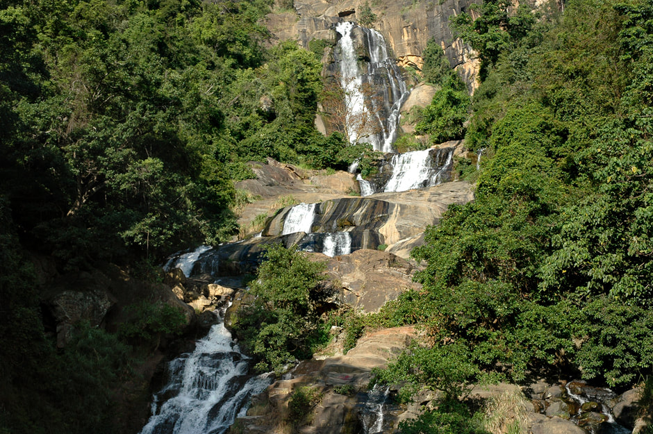

Dunhinda Waterfall
A famous waterfall surrounded by natural beauty.

Nine Arches Bridge
Historic railway bridge located near Ella.

Muthiyangana Temple
An ancient Buddhist temple in Badulla.

Ella Rock
A popular hiking destination with scenic views.

Ravana Waterfall
One of the widest waterfalls in Sri Lanka.

Lipton’s Seat
A viewpoint with breathtaking tea estate views.

Bogoda Wooden Bridge
An ancient wooden bridge near Badulla.

Diyaluma Waterfall
The second highest waterfall in Sri Lanka.

Ella Gap
A natural gap with panoramic mountain views.

Dhowa Rock Temple
Historic rock temple with unfinished Buddha statue.